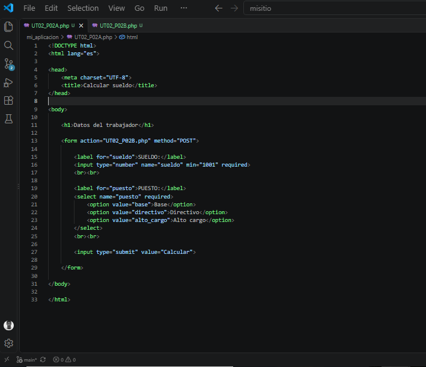
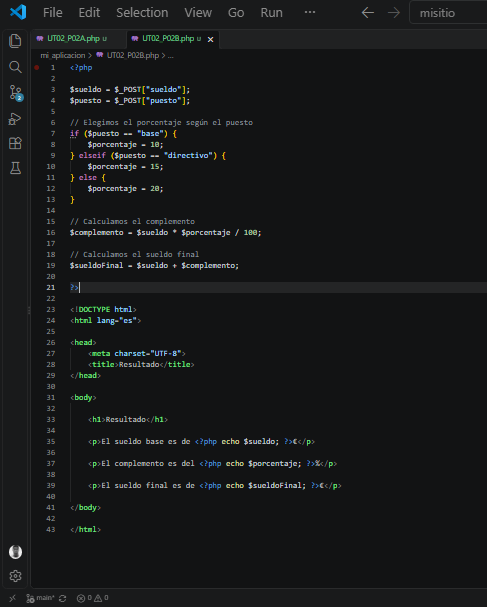
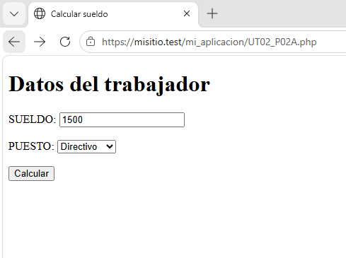
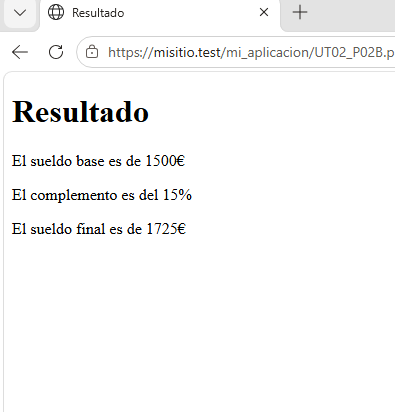

7. Cálculo del sueldo
En esta práctica he realizado un programa en PHP para calcular el sueldo final de un trabajador dependiendo del puesto que ocupa.
La práctica está formada por dos archivos:
UT02_P02A.php: formulario para introducir los datos.UT02_P02B.php: realiza los cálculos y muestra el resultado.
7.1. UT02_P02A.php
En este archivo he creado un formulario para introducir el sueldo del trabajador y seleccionar su puesto.
El formulario tiene un campo para introducir el sueldo y un menú con tres puestos: Base, Directivo y Alto cargo.
También he añadido un botón para enviar los datos al archivo
UT02_P02B.php.
Captura del código

7.2. UT02_P02B.php
En este archivo recibo los datos enviados desde el formulario.
Primero recojo el sueldo y el puesto seleccionado. Después, mediante condiciones, asigno un porcentaje dependiendo del puesto:
- Base: 10%
- Directivo: 15%
- Alto cargo: 20%
Después calculo el complemento y lo sumo al sueldo base para obtener el sueldo final.
Finalmente, muestro el sueldo base, el porcentaje aplicado y el sueldo final.
Captura del código

7.3. Funcionamiento
El funcionamiento de la práctica es el siguiente:
- Introduzco el sueldo.
- Selecciono el puesto.
- Pulso el botón Calcular.
- Se envían los datos al segundo archivo.
- PHP calcula el complemento.
- Se muestra el sueldo final.
Ejemplo
Si introduzco un sueldo de 1500 € y selecciono Directivo, se aplica un 15% de complemento.
El complemento es de 225 € y el sueldo final es de 1725 €.


7.4. Conclusión
Con esta práctica he aprendido a utilizar formularios HTML junto con PHP, recibir datos, utilizar condiciones y realizar operaciones matemáticas para obtener un resultado.